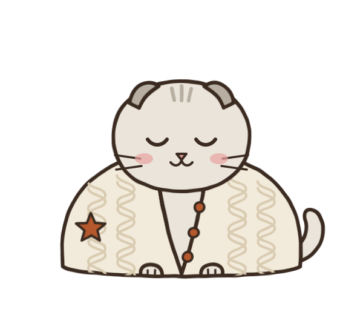
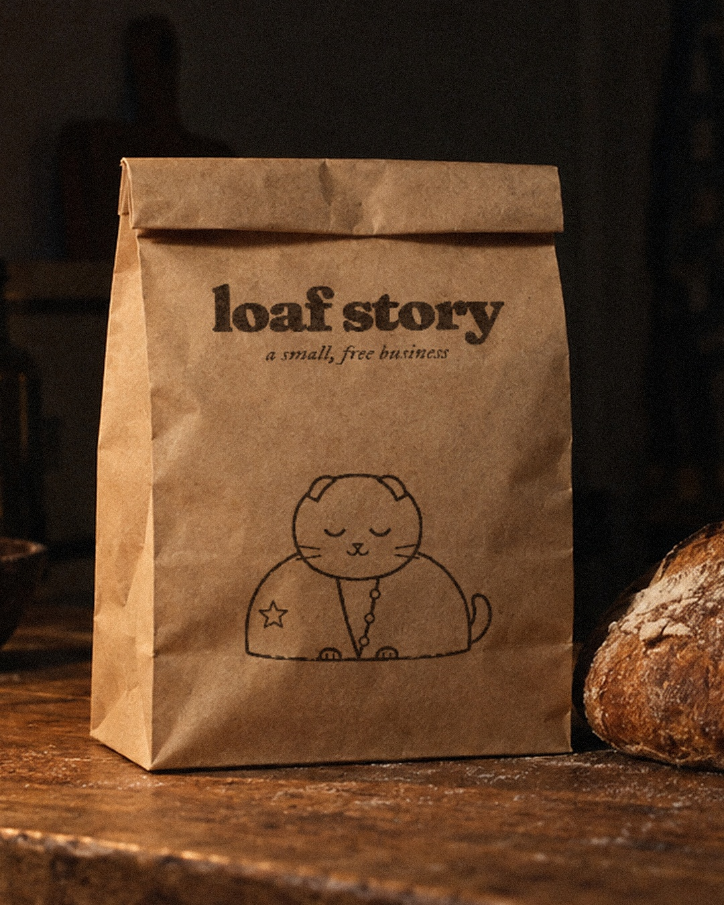
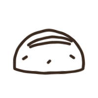

Gato deitado com as patas escondidas tem nome na internet: cat loaf, gato em formato de pão. A betty é assim, uma Scottish Fold de orelha dobrada como as gatas da Taylor, vestindo o cardigã de tricô com estrela bordada. O nome vem de uma das personagens do folklore.



